If you just edited portal-config.js (projects, links, or FAQs), your most recent change very likely has a small typo — usually a missing comma or a missing " quote on the line you added.
On GitHub, undo that one change (or fix the typo) and save again.

Please reach out to Benjamin.Bell@swgas.com to fix this link, or use the Project Creation & Archive Request Form to create a new project.
This Smartsheet view is taking longer than usual. It may just be a slow connection. You can keep waiting, or:
Please confirm that you saved your work before leaving this project.